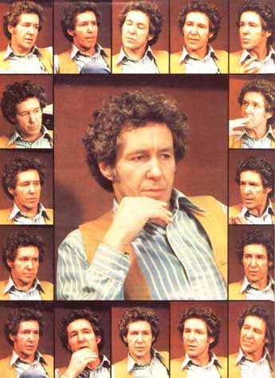
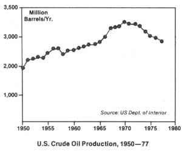
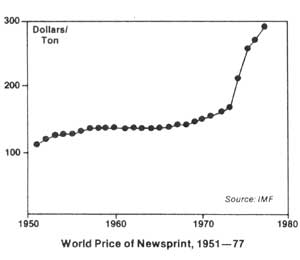
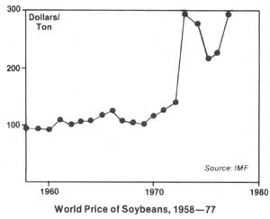

Lester R. Brown: Author, Ecologist And Economist
A Plowboy Interview with Lester Brown who has spent the last 20 of his 44 years studying and writing about global food, population, and other economic and environmental problems.
By the Mother Earth News editors
March/April 1978
"One of the world's most influential thinkers". . . those are the words The Washington Post used to describe Lester R. Brown. And to anyone familiar with his work, it will come as no surprise. Author/ecologist/economist Brown has spent the lost twenty of his 44 years studying and writing about global food, population, and other problems ... and becoming justly famous for his strikingly original interdisciplinary analyses of those problems.
Lester Brown was recognized as a leading authority an the world food situation as early as 1965, when he was the recipient of the Arthur S. Flemming Award as one of the Ten Outstanding Young Men in the Federal Government. A year later-at the age of 31?Brown was named one of the Ten Outstanding Young Men of America by the U.S. Jaycees, in recognition of his early anticipation of the 1965 crop failure in India. (Brown foresaw the crisis early enough to initiate a massive-and successful-food rescue effort, thereby averting disaster.)
To say that Lester Brown is well prepared academically to analyze world food (and other) problems would be an understatement. Brown holds degrees in agriculture, economics, and public administration from Rutgers, the University of Maryland, and Harvard. (He also counts among his credits several honorary doctorates.) No less impressive than his academic background, however, is Brown's surprisingly diverse-some might say promiscuously diverse-professional affiliations: He is a member of the Federation of American Scientists, the Society for International Development, the World Future Society, the American Economic Association, Zero Population Growth, the U.S. Committee for UNICEF, the Council on Foreign Relations, and the Board of Directors of the Overseas Development Council. (At present, he is also President of and Senior Researcher with Washington, D.C.'s World-watch Institute, a private, non-profit research organization.)
Lester Brown's six books (Man, Land, and Food; Seeds of Change; World Without Borders; In the Human Interest; By Bread Alone; and The Twenty-Ninth Day) have been published in a dozen languages, and his incisive analyses-sometimes technical, sometimes informal (but invariably fascinating)have appeared in such diverse periodicals as Time, Foreign Affairs, Scientific American, and The Wall Street Journal.
But despite his many degrees ... despite his professional achievements ... despite the fact that he is so widely published ... Lester Brown remains a remarkably modest, remarkably approachable, and refreshingly (for an economist) straightforward guy. It turns out that Lester is also a deeply concerned (and unusually perceptive) observer of the economic, environmental, and energy scenes ... as MOTHER editor Kas Thomas learned last January when he spoke with Lester Brown in the Worldwatch Institute's seventh-floor offices in Washington, D.C.
PLOWBOY: Mr. Brown, you've been a recognized authority on world food problems for more than fifteen years. Your name is a familiar one to thousands of ecologists, economists, political figures, and educators ... to say nothing at all of lay readers who've followed your work. Yet I wonder how many people really know who Lester Brown is ... how he got his start, how he came to be a world food expert. Maybe you can begin, en, by telling me a little bit about your early background.
BROWN: Well, I was born March 28,1934, and I spent my childhood in a rural part of New Jersey. Believe It or not, there is a rural part of New Jersey (laughter). It's the southern part of the state, where the Delaware River becomes the Delaware Bay. That's the area that gives New Jersey its name, the Garden State. It's an area with lots of very rich, sandy loam coastal soil, where people grow a lot of tomatoes and asparagus and sweet corn and strawberries ... those kinds of things.
PLOWBOY: What were your parents doing?
BROWN: They were farming. We had a small farm ... 40 acres exactly. It was a general farm, the kind you don't see much of anymore. Had a dairy. I milked cows for years and years as a child without ever missing a milking. You know, whenever people talk about sick leave here at the office, I just smile. We didn't know about sick leave back then ... all we knew was that those cows had to be milked. And milk 'em we did, day in and day out.
When we were in our teens, my brother Carl and I put together a tomato growing operation. Started out with an old tractor we bought for a song and overhauled. We eventually rented some extra fields and gradually expanded. I started when I was 14, and by the time I was 24 we were marketing a million and a half pounds of tomatoes a year. Tomatoes worked out pretty well for us while we were in school. The tomato season fits the academic year pretty well. It's a summer crop, and the harvest is over by the time school starts in the fall.
We're faced with a period of profound change ahead ... change that's so profound that, in many ways, it's difficult to describe.
Anyway, while I was growing tomatoes I went to Rutgers and worked on my bachelor's degree in agricultural science. At that time, you see, I wanted to be a farmer ... a very large scale tomato farmer. That was sort of my early goal. But then?after I finished up at Rutgers?I spent a winter one year living in India under the International Farm Youth Exchange Program, sponsored by the 4-H Club Foundation.
PLOWBOY: What year was this?
BROWN: That would've been 1956. Yes, 1956.
PLOWBOY: What did you do next?
BROWN: Well, after living in India for half a year, I came back home and grew tomatoes for a couple more years. And then I decided that just growing tomatoes for the next 40 years would not be all that challenging. Also, around this time I began to be interested in world agriculture, world food problems.
In the fall of 1958, 1 decided I wanted to join the Foreign Agricultural Service in the U.S. Department of Agriculture, in Washington. Before I could do that, however, I had to have a degree in agricultural economics. So I stopped off in College Park-at the University of Maryland?in the fall of 1958, and in June of 1959 1 finished my degree and joined the Department.
PLOWBOY: That was a master's in agricultural economics?
Millions of automobiles being purchased this year will still be on the road when the oil wells begin to go dry in a major way.
BROWN: Right. After I got that degree, I was at the Department of Agriculture for a few years in the international side as an analyst. I worked on world food trends. In 1961, I went back to school-this time Harvard-to get another degree: my master's in public administration. After that, I went back to the Department of Agriculture and began a study of world food needs, in which I tried to project certain trends to the end of the century.
PLOWBOY: That was a study entitled Man, Land, and Food ... is that correct?
BROWN: Yes. That was in May 1963. U.S. News and World Report did a cover story on that in early 1964, and Orville Freeman-who was Secretary of Agriculture then?called me about it. We had not met before. Thanks to that study, it was only a matter of months until I became Freeman's adviser for foreign agricultural policy.
I was the Secretary's adviser for two or three years before he asked me to head the International Agricultural Development Service, which is the technical assistance arm of the Department. That's what I did from 1966 to 1969.
PLOWBOY: When did you decide to leave government?
BROWN: Well actually, I decided to leave in late '68, before the election ... although I didn't vacate my post until early 1969. 1 decided to leave mainly because I felt that I had done all that I could do at that point in my career. That chapter of my life was coming to a close, I had decided.
PLOWBOY: So what did you do then?
BROWN: I helped start the Overseas Development Council, which is just across the street here. I was with ODC a total of five years, during which time I wrote four books: Seeds of Change, World Without Borders, In the Human Interest, and By Bread Alone. The last book was written in conjunction with Erik Eckholm.
PLOWBOY: When did you decide to start the Worldwatch Institute?
BROWN: Three of us at the Overseas Development Council Erik Eckholm, Blondeen Duhaney, and myself-started this institute in early 1975. We began with a half-million-dollar start-up grant from the Rockefeller Brothers Fund. We've since gotten funding from the Kettering Foundation, the Edna McConnell Clark Foundation, the Council on Environmental Quality, the Agency for International Development, the Federal Energy Administration, and several U.N. sources.
PLOWBOY: What kind of organization is Worldwatch?
BROWN: We're a private, non-profit research organization of about 12 people. And, when I say 12 people, I mean that's our total staff for research, writing, editing, typing, fund-raising, outreach, reception ... everything. We're a small group, as groups of this type go, and we don't have any aspirations to become larger. I think we're pretty close to the optimal size.
Books constitute our principal product. Every important issue that we select for research results in a book. Often, we'll publish individual chapters of books in progress ... these are our Worldwatch Papers. So far, we've done three books and 16 papers, and we'll release another dozen Worldwatch Papers this year.
I might add that we're not a research institute that does reports which once they're finished-are put on the shelf somewhere to gather dust. The Worldwatch Papers go out to thousands of key people?politicians, analysts, people in the media?all over the world. Each time we publish a new Paper, we hold an international press lunch which includes representatives from the Associated Press and Tass, The Washington Post and Pravda, the Spanish News Service, the German Press Agency, the BBC, The New York Times, and so on. We make a vigorous effort to share the results of our research with anyone who's interested.
PLOWBOY: I understand you've just finished a new Worldwatch Institute book entitled The Twenty-Ninth Day: Accommodating Human Needs and Numbers to the Earth's Resources.
BROWN: That's correct. The book is being published by W.W. Norton and Company of New York. It's due to come out in March 1978.
PLOWBOY: I wonder if you could explain the significance of the book's title. What's the meaning of "the twenty-ninth day"?
BROWN: The title comes from a riddle the French use to teach their schoolchildren exponential growth. The riddle begins with a lily pond that has one leaf in it the first day, two leaves the second day, four the third day, then eight, and so on. Question: If the pond fills on the thirtieth day, when is the pond half full? Answer: the twenty-ninth day.
As I look at the world today?at our global lily pond?I think it's at least half full. Within the next generation, it may fill up entirely. The purpose of the book is to call attention to this fact ... to sound the alarm, so to speak.
PLOWBOY: What conclusions do you arrive at in the book?
BROWN: The principal conclusion of the book is that we're faced with a period of profound change in the years immediately ahead ... change that's so profound-so all-encompassing?that, in many ways, it's difficult to describe.
The changes I foresee derive from two important sources. One is the energy problem we're now facing ... and the other has to do with the stresses being placed on the earth's biological systems.
The world's biological systems provide all of our food ... and all the raw materials used in industry except for minerals and petrochemicals.
Of course, the energy problem is nothing new to most people. But I think there's been a tendency in this country to think of the energy dilemma as our grandchildren's?or perhaps our children's?problem ... something that's lurking just beyond the turn of the century. Well, it's not. It's our problem . the present generation's problem.
PLOWBOY: It's taking people a while?especially people in Washington to wake up to that fact.
BROWN: That's true. Many of our leaders are asleep at the wheel, so to speak. And yet, it's painfully obvious that the days of the oil era are numbered. It's a fact. In the U.S., oil production peaked back in 1970 and has been falling ever since. It is now declining and will continue to decline ... the recent influx of Alaskan oil won't change that. Of course, eight years ago when oil production peaked and started downward in the U.S.?it didn't pose a serious problem, because we were able to turn to foreign sources of petroleum to "make up the difference". ". As of last year, we were importing half our oil
PLOWBOY: Wait a minute ... you mean we're now importing 50% of all our oil?
BROWN: Yes. The latest set of figures isn't in yet, but we may have imported a bit more than half the oil we used in the last quarter of 1977.
PLOWBOY: That's something that a lot of "experts" predicted wouldn't happen until years from now ... isn't that right?
BROWN: It wasn't expected to happen until the mid-1980's. But you see, our failure to cut back on consumption?to conserve in a way that we should be doing?has led to a very rapid growth in oil imports. Now we're importing more than ever before. When the world runs out of oil, of course, the situation will be different ... the world won't be able to "import" oil, as we've done.
PLOWBOY: OK. What about world oil production? When do the "experts" say that world oil production will peak?
BROWN: Last October, I shared a ride to the airport with the head of long-term planning for Gulf Oil. And I asked this man when-for corporate planning purposes-he saw world oil production reaching its peak. He told me he thought it would peak about 1989 ... eleven years from now.
Eleven years. Think of it! Some of the more durable cars?Volvos, Volkswagens, and so on-have an average life expectancy of about 14 years. That means that millions of automobiles being purchased this year will still be on the road when the oil wells begin to go dry in a major way. I don't think we've yet begun to translate that reality into day-today decisions. If we had, we'd probably think twice about buying a new car ... and seriously consider getting a bicycle or moped instead.
PLOWBOY: Eleven years! That's not much "lead time" for developing and deploying?new energy technologies.
BROWN: No, it's not. Whenever humanity has changed energy sources before, it's taken a long time, number one ... and number two, it's wrought tremendous social changes . The switch from wood to coal that began in the twelfth century, for example, culminated?hundreds of years later-in the Industrial Revolution, an enormous economic and social transformation. More recently-in just the past 100 years-we've shifted from coal to oil. As a result, we've seen the rise of what one might call the Auto-Industrial era. The question is when we shift from oil to whatever comes next ... how will that affect society?
PLOWBOY: Well, let's talk about that. What kinds of social changes do you foresee for the next ten years or so, as we come to the end of the petroleum era?
BROWN: I see a lot of changes in the transport sector, certainly. I mean, we've seen some changes already. Five years ago, the notion of reducing highway speed limits for energy conservation purposes-rather than for safety reasons, which is why we had speed limits to begin with?was really quite novel. Now we take it for granted.
Looking ahead, I can see a time?perhaps in the next three or four years when Congress will begin to consider legislating automatic transmissions out of existence, except for handicapped people. The notion of sacrificing 100% in fuel efficiency just to avoid having to move your hand or foot a few feet a day doesn't make much sense anymore.
Or take short-distance air travel. I wouldn't be at all surprised to see shorthop air travel-say from Washington, D.C. to New York-banned within a few years ... because it's very energy?inefficient compared to rapid rail. Likewise, I can see first-class air travel being phased out entirely. It ties up too much valuable cabin space.
Also, I can foresee increased reliance on the bicycle as a means of getting around. Already, some 30,000 people commute to work by bicycle here in Washington.
PLOWBOY: Amazing!
BROWN: Last July, I was in Indonesia giving a series of lectures. One of the lectures I gave was at a large university in central Java, Gadjah Mada University. I was describing some of the changes that we've just been talking about and how we're going to have to modify lifestyles and cut back on resource use, and so forth. And one of the faculty members took me to task. She said, "Are you trying to tell us that we can't go where you are in terms of development?" And I said, "Not quite. I'm not saying you can't go there. I am saying that I doubt if you can make it there. But even if you do, when you get there you may discover that we're no longer there." As evidence of what I was talking about, I cited the fact that in Jogjakarta-one of Java's largest cities-the ratio of automobiles to bicycles is climbing very rapidly ... whereas in Washington, D.C., the ratio of autos to bikes is declining. The number of cars coming into the city of Washington has not increased since 1974. The number of bicycles has.
So we're seeing some important changes as we look ahead to renewable energy sources. We can expect an enormous amount of change.
PLOWBOY: Are there any countries in the world today that are prepared to cope with the coming switch from oil to renewable sources of energy? Can you name any countries that have any kind of "game plan" for meeting their future energy requirements?
BROWN: I can name two such countries. Two countries that have very different ideological systems, interestingly. I'm talking about Brazil and China.
The people of Brazil, as you probably know, are making a major effort to develop grain alcohol as a basic fuel for their economy. They've committed $400 million already to this program. By 1980, the Brazilians plan to be getting 20% of their automotive fuel in the form of alcohol made by fermentation of sugar cane and cassava. By 1995, they want to be able to replace all of their imported automotive fuel with alcohol. When that happens, you'll probably be able to drink or drive, but not both (laughter)!
It's funny, you know, but within Brazil many people scoffed at the idea of making alcohol in such large amounts for use as fuel, because the Americans weren't doing it. If the Americans weren't doing it-some Brazilians argued-it must not be a sensible thing to do. In the past, Brazil has always looked to the United States for leadership where new technologies were needed. We now find that we're no longer providing that leadership.
The other country that's doing some interesting long-term planning is China. The Chinese are doing a number of things. They now have, for example, more than four million methane generators capable of converting animal waste, human waste, and organic waste of all kinds to methane gas, which is then used for home cooking and heating.
China is one of the few countries in the world to have had a very aggressive and successful reforestation program. You know, 25 years ago China was an ecological basket case: deforestation, soil erosion, flooding, the works. Today-once again?they've got a great deal of wood, and they're starting to look at the possibility of making methanol-wood alcohol-in large quantities.
Grasslands are an important part of the global economy. If grasslands deteriorate, the supply of protein will diminish and the cost of food will rise.
China is also doing a better job than any other country in harnessing the energy in falling water. Here in the U.S., we don't even begin to think about hydroelectric power generation unless a dam is 300 feet wide and 100 feet tall and costs $60 million. If it's not that big, the engineers aren't interested. The people of China, however, have been harnessing the power in every little bit of falling water they can find. A friend of mine who was at the trade fair in Canton recently showed me a photograph of some generators that were on exhibit at the fair. They were only about yea-big ... you could have carried one home on the plane with you, they were that compact. The Chinese are using these things all over the place ... wherever water falls.
PLOWBOY: Fantastic!
BROWN: The interesting thing is, as a result of what the Chinese are doing, that President Carter asked the Army Corps of Engineers to do a survey of the dams in this country. And they found that in the U.S. today, there are 49,000 existing dams of one sort or another that could be-but aren't-used to generate electricity. It's not a question of "Do we build this dam?" or "Don't we build that dam?" The dams are already there. They already have water behind them and that water already falls. It's just a matter of putting a generator in each dam, capturing energy in the form of electricity, and hooking into the utility grid that already exists all across the country.
PLOWBOY: How much electricity could we expect to get if we were to back-fit all our dams with generators?
BROWN: A surprising amount. These 49,000 dams we're talking about could produce more power than all the nuclear plants in the country put together. And yet we'd harness that power at a tiny fraction of what it cost to build the nuclear plants. Without incurring any of the risks.
PLOWBOY: Why aren't we doing this? The Chinese are making us look kind of stupid.
BROWN: Well I suppose we'd have to say we are rather stupid. We still have this confounded "bigger is better" mentality that's holding us back. We refuse to look for simple solutions. The idea of seeking small solutions for big problems has not been a part of our intellectual baggage until fairly recently. That-in part-is why we're faced with such profound changes in the years ahead.
PLOWBOY: A few minutes ago, you mentioned that the profound changes you foresee derive from two sources: One is the energy situation, and the other-you said-had to do with stresses being placed on the earth's biological systems.
BROWN: That's right.
PLOWBOY: What are the biological systems that concern you the most?
BROWN: I'm talking primarily about four biological systems: fisheries, forests, grasslands, and croplands. The first three are essentially natural systems ... the fourth is man-made. The important thing to recognize about these four systems is that they provide all of our food ... a good deal of the world's energy, in the form of firewood ... and all of the raw materials used in industry except for minerals and petrochemicals. That's really quite startling, if you think about it. Humanity depends for its very survival on these four biological systems. But as human demands-fueled by both population growth and rising affluence-put more and more pressure on the biosphere, we see that the claims being made on the biological systems are beginning to exceed the systems' regenerative capacities.
PLOWBOY: Please go on.
BROWN, Perhaps I can explain it better this way: Ecologists-as part of their analytical tools-have a concept called carrying capacity. A rancher, to give an example, carries a certain number of cattle on his land. He knows what the carrying capacity of his land is ... he knows that if he tries to carry too many cattle, they'll overgraze and destroy the grass, and eventually there'll be nothing left. The rancher-because he owns the land and doesn't want it destroyed?has an interest in the long-term productivity of his land . . . consequently, he'll adjust the number of cattle to the land's carrying capacity.
We have a similar situation in economics, although it's not recognized as such. Let's say we have a philanthropic foundation that has an endowment of $100 million. And let's say that the foundation invests its money so that it'll earn interest at the rate of 6% per year. In this case, the foundation's officers can disburse $6 million a year in grants indefinitely. But if the officers begin to respond to a lot of external pressure and start disbursing funds at the rate of $10 million per year ... well, it's only a matter of time before that foundation runs out of money and has to close its doors.
It's the same with biological systems. You can only take so many fish out of the ocean, or so many trees out of the forest, before you begin to exceed the regenerative capacity of the ocean, forest, or whatever.
PLOWBOY: You can overgraze in the short run, but you can't overgraze in the long run.
BROWN: Exactly.
PLOWBOY: Can you give me a real-life example of a biological system that's being overexploited?
BROWN: Probably one of the most dramatic examples I can name is the anchovy fishery off the coast of Peru. At its peak in the late 1960's, the Peruvian anchovy harvest accounted for nearly a fifth of the world's total fish catch. It peaked in 1970 at about 13 million tons, which made Peru the world's largest fishing nation. But at that point, the catch exceeded the sustainable capacity. The annual off-take of anchovies was more than the natural system could bear. As a result, the Peruvian anchovy fishery has collapsed. The 1977 harvest stood at less than a million tons.
In 1960, fully half the families in this country could hope to own a home. As of early 1978, that figure is down to less than 32%.
And this is not an isolated example, by the way. You can see a similar pattern in the world fish harvest. Between 1950 and 1970, the world fish catch more than tripled. It went from 22 million tons to 70 million tons. But in 1970, the trend was has fluctuated between 65 and 70 million tons a year. World population growth, however, has continued ... so-in per capita terms-the catch has fallen by about 14% since 1970. The result has been a rise in fish prices. If you go to your local seafood market, this will be very obvious. The price of almost every form of seafood is going up.
The sad truth is, the majority of the world's fisheries are now being over fished. And overfishing?by definition-is not sustainable.
PLOWBOY: It's ironic, isn't it? Ever since the time of Jules Verne, people have thought that the oceans would be the ultimate source of food. "When we run out of possibilities on land," we've told ourselves, "we'll just turn to the oceans."
BROWN: In fact, though, it's working just the other way. As the pressures on the world's oceans have increased, we've been forced to turn to land-based food systems to try to pick up the slack. What it means is that both ocean-based and land-based food systems are now under growing pressure.
PLOWBOY: How are the land-based food systems holding up under this pressure?
BROWN: Not very well, I'm afraid. The problem is, most of the world's good land is already under the plow. And much of that land is deteriorating.
You know, up until 1972?when we suddenly found ourselves sharing food shortages with the Russians?the U.S. was able to respond with food aid any time hunger threatened in any part of the world. In 1966 and '67, for instance, India had two monsoon failures in a row. We responded by shipping one-fifth of our wheat crop to India during those two years. As a result, the massive famine that threatened to overtake India never materialized.
If India had a crop failure this year and we were to begin thinking of shipping a fifth of our wheat crop to India, do you have any idea what would happen to the price of food in the world? Let me tell you, it would skyrocket. And do you know what happens today in Third World countries when the price of food goes up? I can tell you what we've seen in India, Bangladesh, Ethiopia, and the Sahelian-zone countries: a rise in death rates. Whenever the price of wheat goes above $3.00 a bushel now it used to be $1.50 a bushel, in the 1960's?death rates rise in the low-income countries that have poor crops. There may be a lag of six to twelve months, but if the world price of wheat goes up, you'll see the death rate go up in Bangladesh. You can count on it.
All of this is not to say that we can't produce more food in the world today. We can produce quite a bit more food than we're now producing ... but-and here's the catch-it'll cost more. When you begin to produce food on marginal land-which is all that's left-the production costs are higher. It takes more fertilizer, more water, more energy, and so on. So the question is not, "Can we produce more food?" We can. The question is, "How much will it cost, and how does that cost relate to the ability of the poorest people in the world to pay?" If you're already spending 80% of your income on food?as many people in India and Ethiopia are today-and the price doubles, you just can't tighten your belt enough and stay alive.
PLOWBOY: To summarize what you've said, then, it looks as though mankind is running head-on into the problem of carrying capacity where the world's fisheries and croplands are concerned. Is that right?
BROWN: I think so, yes. But, of course, there's one food-producing system we haven't said anything about yet.
PLOWBOY: Which is ...
BROWN: Which is the world's grasslands.
PLOWBOY: How important are grasslands?
BROWN: Grasslands provide a substantial amount of the world's protein. They give us much of our milk, cheese, and butter, and certainly most of our beef and mutton. Grasslands are also the source of raw materials for the leather-goods industry and one of our important textile fibers, namely wool. In short, grasslands are an important part of the global economy. If grasslands deteriorate, the supply of protein will diminish and the cost of food generally will rise.
PLOWBOY: Are grasslands deteriorating?
BROWN: They're deteriorating dramatically in most of Africa, parts of Asia, the Middle East, Central America, South America, and some parts of the U.S. Surprisingly, the Bureau of Land Management?which oversees something like 150 million acres of grassland in this country?reported in 1975 that most of its rangeland is being overgrazed. Some of the Navajo reservations, I think, are carrying four times the number of livestock that the land can carry on a sustainable basis, which means that their grassland is going downhill very fast.
The implications of this are alarming. In many poor countries, for instance, the hope of replacing water buffalo and bullocks with tractors has gone by the board because of rising fuel costs. As a result, overgrazing is occurring much more frequently and is threatening both the supply of livestock products and-indirectly, by imperiling draft animals-food production.
It's a complicated situation. As fuel costs go up, people rely more heavily on draft animals, and the draft animals overgraze ... leading-in turn-to fewer draft animals and lowered food production. At the same time-as the demand for food increases-more forests are cleared to provide new cropland.
PLOWBOY: So in other words, the increased demands being made on the world's fisheries put additional pressure on the planet's land-based food systems ... croplands and grasslands. And that pressure-in turn-puts stress on the earth's forests ... because in order to "make" more croplands and grasslands, you have to carve 'em out of the woods.
BROWN: Well, where forests are concerned the problem is even worse than that. Because forests are not just being cleared to provide new cropland. They're also being cut down to meet the ever-increasing demand for firewood, paper pulp, and lumber. A third of the world's people, you know, rely entirely on wood to heat their homes and cook their meals.
PLOWBOY: How are the world's forests holding up under this pressure? Is deforestation becoming a serious problem?
BROWN: Almost every country undergoing rapid population growth is being rapidly deforested. The problem is most severe in Africa, large parts of Asia except for China, parts of Latin America, Central America, and Mexico. I mentioned that 22 years ago I spent part of a year in India. I lived in central India, on the Deccan Plateau ... an area that was-at the time-heavily forested. Well, over the past 20 years I've been back to India perhaps a dozen times, and as I've returned to the area where I used to live, the thing that has impressed me more than anything else has been the massive deforestation that's occurred there. You can go for miles and miles now and never see a tree. The trees are all gone now.
We had a report recently from a Peace Corps volunteer who was working in a village in Ecuador, near Quito. He said that in his village, the closest remaining trees were far up in the mountains. It took about four hours, he said, to climb up to where the trees were, cut the wood, and carry the wood home ... on your back, of course. Today, the people in that village devote a good deal of their energies every day just to getting the wood they need for cooking. It's led to a degradation in their standard of living. Instead of eating two hot meals a day now, these people only eat one. That's all they can afford. ford.
You see, there's no easy way out for these folks. There's no cheap oil ... they can't afford kerosene ... and the wood is too far away. In some African countries, the price of firewood has gone up almost as rapidly as world oil prices over the past few years. In fact, there's a saying now in some African countries that "it costs as much to heat the pot as to fill it".
PLOWBOY: Is deforestation a problem in North America?
BROWN: There are still a few parts of the world where deforestation is not yet a serious problem. North America is one of them. The Soviet Union is another. Western Europe used to be in pretty good shape, although some supply problems are developing there now.
We're not immune to what's happening in other parts of the world, however. The global deforestation problem does affect us. As you know, the price of newsprint has gone up every year now for the past five years. It's doubled, I think, since 1972.
And it'll continue to rise. The implications of this-for education, for the communications media, for literacy in the world?are worth thinking about. It's pretty hard, you know, to have reading materials in Third World countries if there's no cheap newsprint around.
We're feeling the pinch in newsprint, and we're feeling it in lumber costs. In 1960, fully half the families in this country could hope to own their own home, their own single-family dwelling. As of early 1978, that figure is down to less than 32%.
PLOWBOY: The average new home in this country cost $57,700, 1 think, in December of 1977. And it's still going up.
BROWN: I know. A few months ago, Patricia Harris?Secretary of Housing and Urban Development?called for an investigation into why the cost of housing was going up so fast I . . almost as if she thought there was a conspiracy or something at work. I could have told her one of the main reasons why prices are going up so fast, and that is that lumber is becoming scarce. Good wood is an increasingly dear commodity.
I can remember when-if a tree was blown over in a windstorm-the D.C. city government street maintenance crews would come out, saw the tree up, and haul it away somewhere to be dumped. They don't do that anymore. Nowadays, they don't even bring a truck with them! Whenever a tree blows down in Washington, the maintenance guys come with their saws, slice the tree up into firewood-sized pieces, stack the wood along the edge of the street, and forget it. Look ... you see that tree stump across the street there? That used to be a sizable tree, but it didn't have a good root system and the wind just blew it over one day. The city maintenance crew came in, cut it up, stacked the wood between that other tree there and the parking meter, and left it. The next day, the whole tree was gone ... everything (laughter). Some people have even begun to follow the city maintenance crews around now. They follow the crew to their first job in the morning, load up on firewood, and speed off!
PLOWBOY: It's surprising how many people in the U.S.-New Englanders in particular-have begun to turn to wood heat in earnest. I remember Amory Lovins saying something once about how 40% of all the houses in Vermont have been back-fitted by the owners with wood stoves in the past three or four years.
BROWN: Right. I've seen some recent estimates to the effect that the New England energy economy well?a generation from now-be largely a wood-based economy. People in that part of the country have the capability to substitute wood for oil not only in home heating, but in electrical generation.
PLOWBOY: Is this really as good an idea as it seems, though? I mean, it's one thing for a few homesteaders to get 100% of their heat from wood and for city dwellers to supplement their existing systems with wood now and then-but would it be ecologically sound for everyone in the U.S. to turn to wood heat over the next ten or twenty years?
BROWN: I think that if our entire population of 216 million people ... which, remember, is far more people than we had in this country when we were a wood-based economy 200 years ago ... if all of us turned to wood, I think the pressure on our forests would be more than they could sustain. So what we need to do is this: Some of us can go to wood heat. Some of us can put solar collectors on our roof. Some of us can invest in extra insulation. Some of us can tap hydropower, which-as I said earlier is already available. Some of us can turn waste organic materials into methane. Several cities around the country-Pompano Beach, Florida, for example-are already doing this. It's important to recognize that there isn't a single solution to the problem, but many solutions ... and many combinations of solutions. We haven't even begun to systematically think through the many ways in which we can conserve energy and develop alternative sources of energy to carry us through the years ahead.
It's important to remember, too, that the energy problem like all the other problems we've just talked about-is a global problem requiring global solutions. All of these things?deforestation, the energy dilemma, overfishing, overgrazing are interconnected, and the problems in one area multiply difficulties in another.
PLOWBOY: Could you give me an example of what you mean?
BROWN: In deforested Third World villages where people can't get enough firewood, they burn cow dung instead. This is the cow dung that once went back on the land as fertilizer. It now gets burned. The firewood shortage is actually contributing to the deterioration of the food situation in the Third World.
You can't separate these issues. You cannot separate the state of the global economy from the state of the biological systems on which that economy depends.
Here's another example. Synthetic textile fibers are made from petroleum. As the price of oil goes up, so does the price of synthetic fibers. Well, when textile fibers go up in price, farmers in Mexico begin planting more and more cotton. And as they plant more land to cotton, food shortages develop in Mexico. Then Mexico has to import more food.
Look at what happened to soybeans when the Peruvian anchovy fishery collapsed. As you probably know, most anchovies end up being fed to poultry and hogs as fish meal. OK. When the anchovy catch fell in the early part of this decade, farmers had to find another source of high-quality protein for their poultry and hogs. They chose soybeans. And the increased demand for soybeans sent prices through the roof!
Now, when soybean prices went from $2.40 a bushel to $5.00 a bushel, Brazilian farmers started planting soybeans. Many of them ripped out coffee trees to do this. The result was that a year and a half ago-when a severe frost damaged the remaining coffee crops-we discovered that we didn't have enough reserves of coffee to carry us through a poor crop year. And the price of coffee increased fourfold in a matter of months.
So you see, you can't separate these issues. You cannot separate the state of the global economy from the state of the biological systems on which that economy depends.
PLOWBOY: You seem to be hinting that some of our current economic problems are linked to problems in the biosphere.
BROWN: our current economic problems?including inflation, unemployment, and capital shortages-are, to a large extent, of biological origin. Arid that is one reason why economists today are at such a loss to explain what's going on around them. Those of us trained in economics generally do not pay any attention to what's happening to biological systems ... and I think that's a serious mistake. We have reams of data and so forth, but it's economic data. It doesn't tell you what the rate of deforestation is in Africa.
Part of the problem is that economists and ecologists don't communicate much with one another. Their conceptual frameworks?their analytical tools-are different. Economists-for instance-think in terms of unlimited linear and exponential growth. Ecologists think in terms of closed cycles: the nitrogen cycle, the carbon cycle, the hydrological cycle, etc. Economists think of specialization as a virtue. Ecologists see specialization as a risk and a danger. At least, that's what evolutionary theory teaches us. The point I'm trying to make is that it's very difficult to achieve communication between the people who study economic systems and the folks who study the biological systems on which the global economy depends .
I was at a conference at Williams College in Massachusetts a few years ago, where leading ecologists and economists had been brought together to discuss problems of environment and development in the Third World. I remember that as I was addressing this congregation on the morning of the second day, I commented on the fact that economists and ecologists are like oil and water. You can mix them all you want, but they won't stay together. Barry Commoner was sitting in the front row, and he said, "But you know, if you put oil and water together under pressure, they'll stay mixed." And I said, "What do you get?'' And he said, "Mayonnaise."
Unfortunately, there's some truth to that. Most efforts to bring economists and ecologists together do not yield anything much more exciting, intellectually, than mayonnaise. And I see this as a major problem in policymaking. I think the world today would be much better off if we had fewer economic advisers in government and more ecologic advisers. It would certainly bring decision-making in closer contact with reality.
PLOWBOY: Let's talk about reality. economic reality. What kind of economic trends do you anticipate for the immediate future? I know that a good many economic writers and investment advisers are predicting a downturn in the economy starting the second half of this year, Do you agree with this assessment? Are things going to get worse before they get better?
BROWN: Things are going to get much worse, I think. I'd prefer to look ahead a couple of years, however-not just a few months-to get a clear contrast with the present.
I think that within the next two years we'll see some very profound changes in our thinking with regard to the economic system, how it functions, how best to measure its progress and performance, etc. I expect we'll begin to seriously re-examine the way we think about growth, how we think about employment, and how well the economic system satisfies human needs ... not just in terms of food, clothing, and shelter, but psychological needs, too. I mean, the present system is not the most satisfying one?spiritually and psychologically?that one can imagine, I don't think.
In looking ahead over the long term, I think I can say with some confidence that the final quarter of this century will not be a simple extrapolation of the third quarter, in the way that the sixties were an extrapolation of the fifties. Whether we like it or not, we're about to undergo a period of rapid, far-reaching, perhaps traumatic change. We'll see changes in lifestyles, land ownership patterns, family size, educational systems, the media, the transport sector, eating habits ... virtually every aspect of our lives will undergo adjustment. Perhaps radical adjustment.
I think the adjustment has already begun. People are driving smaller cars now. In some circles, the bicycle is now a symbol of enlightenment and parents with more than two children are viewed as socially irresponsible. People are back-fitting their homes with wood-burning stoves. Backyard and community gardens are becoming commonplace. People are growing their own tomatoes ... tomatoes that I once would've had to grow for them.
It's interesting, too, to note that per capita meat consumption in this country-which has been climbing for some time may have peaked at some time in the past few years. Meat consumption in the U.S. may actually be on the way down now.
These kinds of changes are bound to continue. They have to. The growth ethic-the "bigger is better" way of doing things?must give way to a new ethic, an ethic of accommodation.
It's no longer a question, you see, of whether or not we'll cut back on oil consumption. When the wells begin to go dry in eleven years, we will reduce our consumption. The question is not, "Will we stop overfishing?" Overfishing, by definition, is not sustainable. We will stop ... either by international convention, or because there are no fish left.
The question-in short-is not, "Will we accommodate human needs and numbers to the planet's finite resources?" We will. The question is, will we make the accommodation in a systematic, orderly fashion or in a chaotic and catastrophic fashion?
PLOWBOY: Which do you think it will be?
BROWN: I'm not sure. It's easy to get discouraged, of course ... but I think it's worthwhile to keep in mind that old Chinese greeting.
PLOWBOY: What's that?
BROWN: "May you live in interesting times."
|
 |
 |
 |
|
 |
 |
|